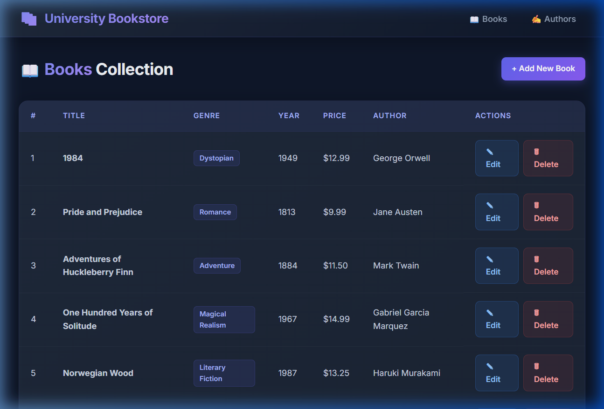
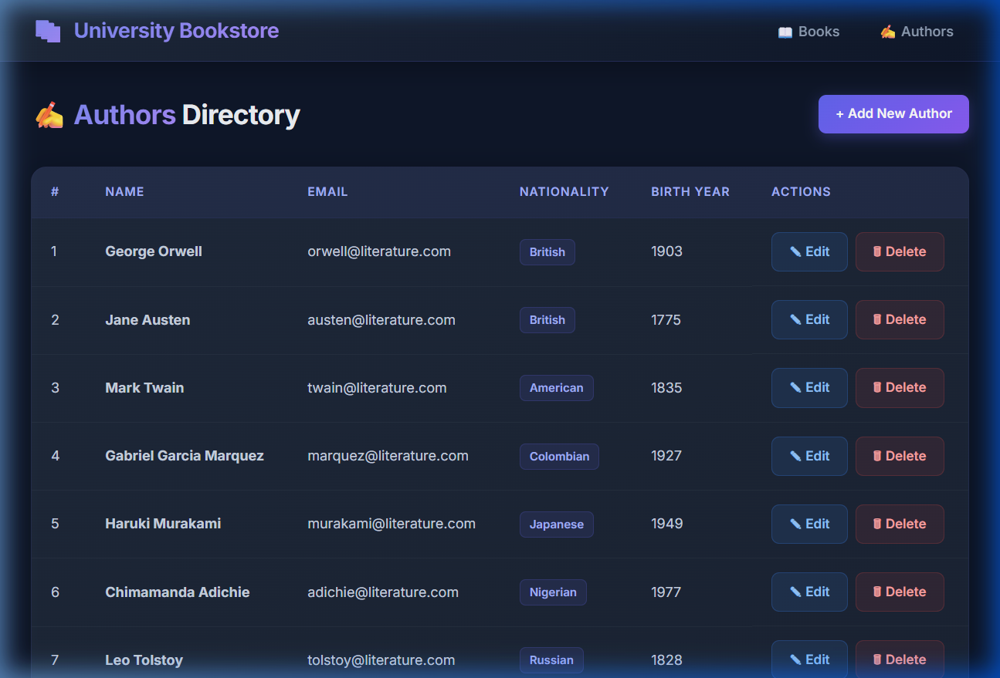
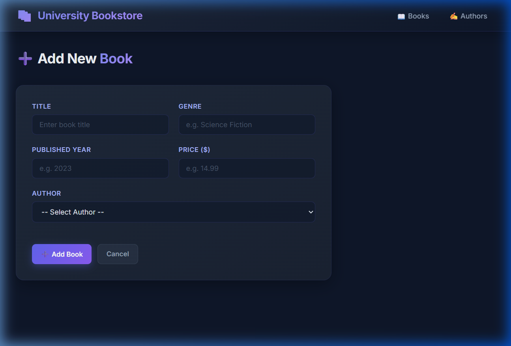

The application models two core entities — Author and Book — with a One-to-Many relationship: one author can write many books, but each book belongs to exactly one author.
| Annotation | Location | Purpose |
|---|---|---|
| @OneToMany(mappedBy="author", cascade=ALL) | Author entity | Author owns the relationship; cascades saves/deletes to books |
| @ManyToOne(fetch=EAGER) | Book entity | Each book holds a reference to its Author |
| @JoinColumn(name="author_id") | Book entity | Creates the FK column in the books table |
| @Column(unique=true) | Author.email | Enforces unique email at DB level |
The application follows a classic layered (n-tier) architecture with clear separation of concerns:
JPA-annotated POJOs (Author, Book) mapped to MySQL tables. Validation via Jakarta Bean Validation (@NotBlank, @Email, @Positive).
Interfaces extending JpaRepository — provides CRUD for free. BookRepository adds a custom JPQL INNER JOIN query returning a projection (BookAuthorDTO).
@Service classes wrap repositories, enforce business rules, throw EntityNotFoundException when records are missing, and manage @Transactional boundaries.
@Controller classes handle HTTP GET/POST requests, populate the Spring Model with data, and return JSP view names. Exception handling is delegated to GlobalExceptionHandler.
Server-rendered pages under /WEB-INF/views/. A shared header.jsp (included via <%@ include %>) provides the navigation bar and full CSS design system.
@ControllerAdvice (GlobalExceptionHandler) intercepts DataIntegrityViolationException and EntityNotFoundException globally, redirecting users to a friendly error page.
A CommandLineRunner bean inserts 10 Authors and 10 Books on startup, but only if tables are empty (idempotent).
The query uses JPQL INNER JOIN (not SQL) and returns an interface-based projection (BookAuthorDTO) — Spring Data automatically proxies the interface and maps each alias to a getter.

Figure 1: Books list page showing title, genre, year, price and author name sourced from the custom JPQL INNER JOIN query. Each row has Edit and Delete actions.

Figure 2: Authors directory displaying all 10 seeded authors with nationality badges, email addresses, and CRUD action buttons.

Figure 3: Add Book form with fields for title, genre, published year, price, and an author dropdown populated dynamically from the database.
| Method | URL | Operation |
|---|---|---|
| GET | /books | List all books (inner join query) |
| GET | /books/add | Show add form |
| POST | /books/add | Save new book |
| GET | /books/edit/{id} | Show pre-filled edit form |
| POST | /books/edit/{id} | Update book |
| GET | /books/delete/{id} | Delete book |
| GET | /authors | List all authors |
| GET | /authors/add | Show add form |
| POST | /authors/add | Save new author |
| GET | /authors/edit/{id} | Show pre-filled edit form |
| POST | /authors/edit/{id} | Update author |
| GET | /authors/delete/{id} | Delete author |
Tests are written with JUnit 5 and Mockito. Repository tests use @DataJpaTest with an H2 in-memory database (no MySQL needed). Service tests mock the repository layer.
| Test Class | Tests | Result |
|---|---|---|
| BookRepositoryTest | findAll(), findAllBooksWithAuthors() | ✅ PASSED |
| BookServiceTest | findAll, findById, save, update, deleteById, not-found exception | ✅ PASSED |
| AuthorServiceTest | findAll, findById, save, update, deleteById, not-found exception | ✅ PASSED |
| Total | 14 / 14 PASSED | |
Spring Boot 3 migrated from javax.* to jakarta.*. The traditional JSTL dependency (javax.servlet.jsp.jstl) caused ClassNotFoundException at runtime, and the old taglib URI http://java.sun.com/jsp/jstl/core was unresolvable.
Switched to org.glassfish.web:jakarta.servlet.jsp.jstl:3.0.1 and updated all JSP taglib declarations to use uri="jakarta.tags.core". Also added tomcat-embed-jasper as a provided scope dependency and changed packaging to WAR with SpringBootServletInitializer.
The shared header.jsp had an HTML comment containing <%@ include %> as example text. The Jasper JSP engine treated it as a real directive and threw: "Include directive: Mandatory attribute [file] missing", causing a 500 error on every page.
Replaced the HTML comment <!-- ... --> with a JSP comment <%-- ... --%>. JSP comments are stripped by the parser before directive processing, so JSP syntax inside them is never evaluated.
Every browser automatically requests /favicon.ico. Since no favicon existed, Spring threw NoResourceFoundException. Our catch-all @ExceptionHandler(Exception.class) intercepted it and redirected users to the error page with a confusing message.
Added a dedicated @ExceptionHandler(NoResourceFoundException.class) in GlobalExceptionHandler that re-throws the exception, allowing Spring's default 404 mechanism to handle it silently — the browser ignores the 404 for favicon requests.
application.properties was initially configured with password=root, but XAMPP MySQL ships with the root account having no password by default, causing "Access denied for user 'root'@'localhost'".
Changed spring.datasource.password= (empty) to match XAMPP's default. As a best practice, documented that production deployments should set a strong password.
The complete source code for this project is available on GitHub. The repository includes all source files, the Maven build configuration, JSP views, unit tests, and this documentation.
🔗 Project Repository
https://github.com/YOUR_USERNAME/university-bookstoreReplace YOUR_USERNAME with your GitHub username after pushing the project